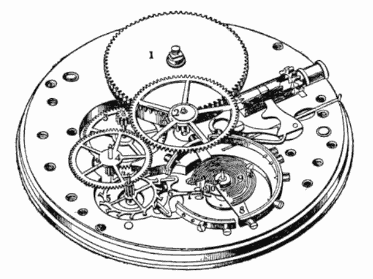
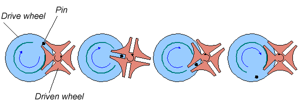
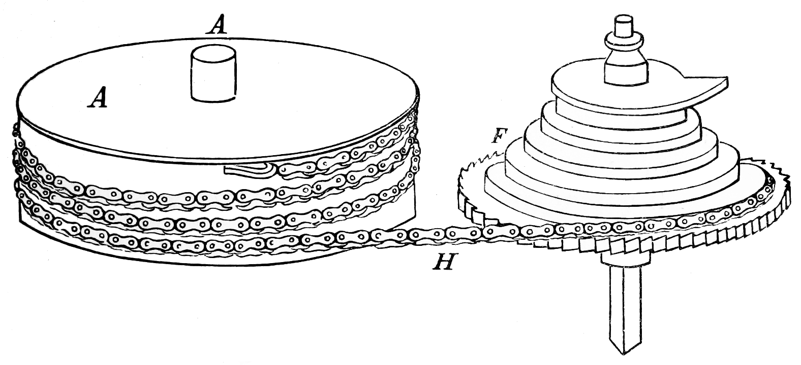

Le schéma bloc définit l'architecture fonctionnelle fondamentale de la montre mécanique à remontage manuel. L'énergie accumulée est transmise, distribuée et régulée de façon continue :
Étape 1 : Énergie
Le Ressort & Le Barillet
Le moteur de la montre. Le ressort-moteur, logé à l'intérieur du tambour (1), emmagasine l'énergie mécanique lors de l'armage.
Étape 2 : Transmission
Le Rouage de Finissage
La démultiplication de la force. Le train d'engrenages (2) achemine l'énergie.
Étape 3 : Distribution
L'Échappement
Le convertisseur cinématique. La roue d'échappement (3) transforme le mouvement rotatif continu en impulsions.
Étape 4 : Régulation
L'Oscillateur
Le cœur isochrone. L'ensemble balancier-spiral (4) dicte le rythme absolu.

1
2
3
4
5
8
9
⚙️
1 Barillet
2 Roue de centre
3 Roue de troisième
4 Roue de seconde
5 Roue d'échappement
8 Balancier
9 Spiral
⚙️ Mécanisme de remontoir
📷 FEUILLET MANUSCRIT ORIGINAL (01-02) — Schéma Bloc & Introduction
2. Organe Moteur (Énergie) : Le Barillet & Systèmes de Remontage
Le barillet est le composant central du stockage d'énergie potentielle du mouvement mécanique.
0%
📷 VUE TECHNIQUE 3D — Anatomie du barillet, ressort et tacques d'accrochage (Modèle explosé interactif).
⚙️ Règle d'Atelier : Sur un mouvement automatique, le remontage manuel par la couronne simule exactement l'état de charge maximale atteint par le rotor.
3. Fixation du Ressort & Régulation de Couple

📷 SCHÉMA TECHNIQUE — La Croix de Malte : blocage de la rotation pour l'exploitation de la plage de couple linéaire.
📷 FEUILLET MANUSCRIT ORIGINAL (01-03) — Fixation du Ressort, Croix de Malte & Fusée

Force Constante : La Fusée-Chaîne
Ce mécanisme historique agit comme une boîte de vitesses à variation continue pour compenser la perte de couple du ressort moteur au fur et à mesure de son désarmage.
Armage maximal : Le ressort est fort, la chaîne tire sur le petit diamètre de la fusée (bras de levier court).
Désarmage : Le ressort s'affaiblit, la chaîne tire sur le grand diamètre de la fusée (bras de levier long), égalisant ainsi parfaitement la force transmise à l'échappement.

.jpg)